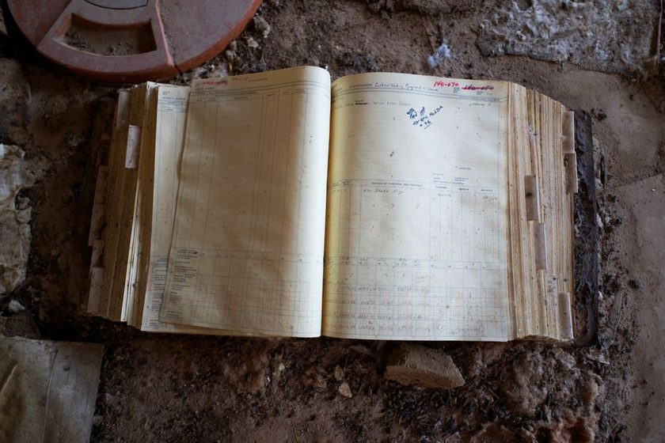

Keeping a Disposal Ledger
The hardest part of an archive is not keeping things — it is deciding, on paper, why something left. A simple ledger for the documents you let go.

On a Sunday afternoon in March, a box of receipts from a car sold two years earlier finally went into the recycling pile, behind a stack of expired insurance cards and four years of pay stubs nobody had looked at since the mortgage closed. Letting go of the paper wasn't the hard part — most of it had been sitting there long enough that nobody could remember why it mattered. The hard part came an hour later, standing in the kitchen with no way to say what had actually left the house that day, or why each piece had been judged safe to release. A keep-everything archive habit answers "do we still have it" well. It has nothing to say about what didn't make it to the next shelf.
The Archive That Only Grows
Most home archives are built around a single instinct: keep it, in case. That instinct is not wrong — a policy folder or a school transcript is cheap to store and expensive to reconstruct, and filing by order of arrival rather than by subject makes the keeping side of the system genuinely reliable. But an archive that only ever adds tends to become a different problem over the years: boxes that were full a decade ago are still full, now holding paper that stopped mattering to anyone long ago, crowding out the shelf space current documents need. The habit that makes keeping easy doesn't come with a matching habit for letting go, so the archive keeps expanding in one direction only, until a closet, an attic corner, or a filing cabinet drawer runs out of room.
What a Disposal Ledger Actually Records
A disposal ledger is nothing more than a page, a notebook, or a spreadsheet row kept every time something physically leaves the archive — shredded, recycled, returned, or handed off to someone else. It needs only three fields to be useful: what the item was, described specifically enough that a future reader would recognize it; the date it left; and the reason it was judged safe to release. That third field does almost all of the real work. A ledger that records only dates and item names is really just an inventory of absence — useful for confirming that something is gone, but silent on whether the decision was sound. Writing "vehicle registration, 2019 sedan, sold 2024" next to the reason "vehicle no longer owned, title transferred" turns a one-line disposal into something a household could defend later, or repeat with confidence the next time a similar document comes up.
Why "Why" Is the Hardest Column to Fill In
Dates and descriptions are easy to write because they are simply observed. The reason field asks for a judgment, and judgment is where most people stall — which is exactly why that column gets skipped in practice, and why so few households end up with any disposal record at all. It helps to write the reason using the same handful of recurring categories every time, rather than composing a fresh justification for each item: retention period met, superseded by a newer document, no longer relevant to a person or asset in the household, or duplicate of something already logged elsewhere. A reason that fits one of those categories can be written in five seconds. A reason that doesn't fit any of them is usually a sign the item wasn't actually ready to leave yet.
A pile of discarded paper explains nothing on its own. A single written reason next to it explains almost everything.
A Ledger in Practice
None of this needs to be elaborate. A working ledger kept by one household over the course of a year might look something like the entries below — short enough to fill in without dread, specific enough to mean something if anyone ever asks.
| Date | Item | Reason for disposal | Disposition |
|---|---|---|---|
| Jan 2026 | Prior-year tax worksheets (originals filed with preparer) | Retention period met; return finalized | Shredded |
| Feb 2026 | Warranty card, dishwasher (unit replaced 2023) | Superseded; appliance no longer owned | Recycled |
| Apr 2026 | Duplicate copy, home insurance policy | Duplicate of copy already logged in another series | Recycled |
| Jun 2026 | Vehicle registration, prior sedan | No longer relevant; vehicle sold, title transferred | Returned to buyer |
| Sep 2026 | Prior-cycle passport | Superseded by renewed document | Shredded |
One household's actual entries, kept as a running log rather than sorted by category.
Before Something Leaves the Shelf
It tends to help to run through the same short list of questions every time an item is being considered for disposal, rather than deciding case by case from scratch.
Three Questions Before It Leaves
Worth asking in order, before a document goes in the recycling or shred pile:
- Is there a practical reason this specific document type is still needed — a warranty still in effect, a return window still open, a filing period not yet closed?
- Does a duplicate, a scanned copy, or a record held by another party (a bank, an employer, an agency) already cover what this page would prove?
- Would a future version of this household actually recognize why this was safe to release, based on the reason about to be written down?
The Ledger Becomes Its Own Record
After a year or two, the disposal ledger stops feeling like a housekeeping chore and starts reading like a short history of the household itself — the year a car was sold, the year a mortgage closed, the year an old address stopped mattering. It also tends to solve a particular failure mode described in the piece on the box that never quite gets finished: without a ledger, an undecided box just sits there indefinitely, because there is no record showing what has already been reviewed and released, and no easy way to tell a decided box from an undecided one. A dated disposal entry is proof that a box was looked at, not just moved from one corner of the closet to another.
A note on what this is: the format above reflects one way of logging household disposal decisions by hand, not a legal retention schedule or a professional records-management standard. How long any specific document tends to be worth keeping before disposal depends on factors particular to each household and its own records; when in doubt, the more conservative choice is usually to keep something a while longer rather than log it as disposed.